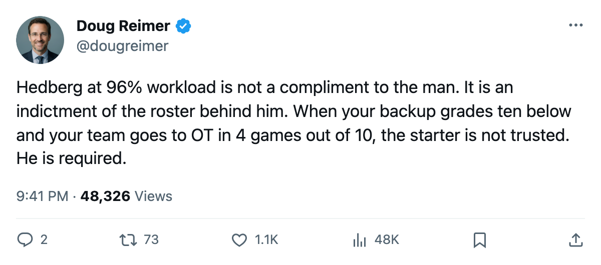
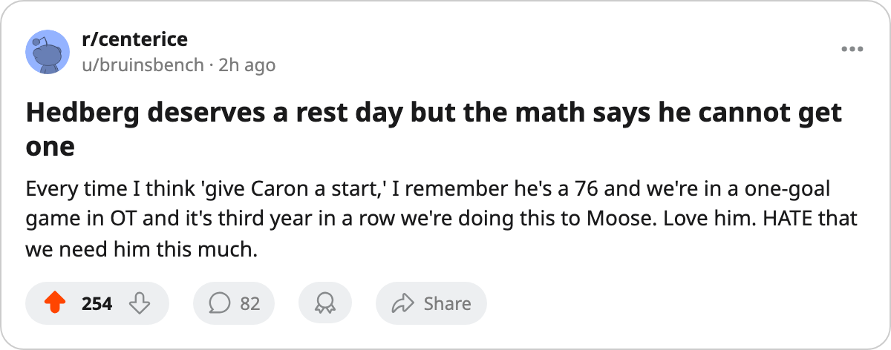

96% Workload, $1.44M a Point, 0 Risers: The Pittsburgh Formula Has One Moving Part
Johan Hedberg has started 24 of 25 games for a team with the 4th-cheapest roster in hockey and the 2nd-best cost per point. Both numbers are true. Neither is sustainable.
 Doug ReimerAnalytics editor, ex-video coach · The Slot Report
Doug ReimerAnalytics editor, ex-video coach · The Slot Report
 Johan Hedberg86 has started 24 of
Johan Hedberg86 has started 24 of  Pittsburgh Penguins's 25 games. At 32 years old, that is the highest goaltending share in the league. The next men are
Pittsburgh Penguins's 25 games. At 32 years old, that is the highest goaltending share in the league. The next men are  Nikolai Khabibulin92 at 92% in
Nikolai Khabibulin92 at 92% in  Tampa Bay Lightning and
Tampa Bay Lightning and  Roman Cechmanek88 also at 92% in
Roman Cechmanek88 also at 92% in  Los Angeles Kings. Hedberg carries 4 points more than anyone else.
Los Angeles Kings. Hedberg carries 4 points more than anyone else.
Hedberg earns $5.65M with 3 years left. His Book grade is 86, built on an ENDU of 93 that explains why he can absorb the load. The Development Index has him at +6, one point below the published riser list. The Bureau does not have him climbing; the coach sits him every night because his endurance grade makes that possible.
The Pittsburgh formula is simple and expensive to sustain: the 4th-cheapest payroll in the league at $48.92M, the 2nd-best cost per point at $1.44M, and 34 points that put them 4th in the East. They are outscoring clubs spending $14M more. The problem is that the formula has no spare parts.
The backup is a 76
Sebastien Caron76 has played 2 games. His overall is 76, 10 points below Hedberg. When Hedberg goes down, Pittsburgh gets a 76 in net.
The Pittsburgh injury ledger tells you why the safety margin matters. The club has logged 24 spells, the most in the league.  Mario Lemieux85 is listed twice.
Mario Lemieux85 is listed twice.  Aleksey Morozov76 three times. Hedberg himself appears once on the injury list, a spell with no body part designated. The Penguins have had more men on the shelf than any other club this season, and Hedberg is the one man available enough to matter.
Aleksey Morozov76 three times. Hedberg himself appears once on the injury list, a spell with no body part designated. The Penguins have had more men on the shelf than any other club this season, and Hedberg is the one man available enough to matter.
40.0% of games go to overtime
Pittsburgh Penguins has been in overtime 10 times in 25 games. That is 40.0%, the highest rate in the league.  New York Rangers sits next at 33.3% over 30 games. Every one of those extra five-minute periods is a period Hedberg cannot give to Caron, because the game is on the line and Caron grades 10 points lower.
New York Rangers sits next at 33.3% over 30 games. Every one of those extra five-minute periods is a period Hedberg cannot give to Caron, because the game is on the line and Caron grades 10 points lower.
The Penguins' 6 overtime wins have all come with Hedberg in the net. The workload is a structural lock: the only goaltender the club trusts in close games is the one carrying 96% of the schedule.
| Goaltender | Club | Games | Team GP | Share |
|---|---|---|---|---|
| Johan Hedberg | PIT | 24 | 25 | 96% |
| Nikolai Khabibulin | TB | 24 | 26 | 92% |
| Roman Cechmanek | LA | 23 | 25 | 92% |
 Jamie Storr79 Jamie Storr79 | COL | 23 | 27 | 85% |
 Roberto Luongo95 Roberto Luongo95 | TOR | 11 | 27 | 41% |
The two old men
The Penguins' two most important players are 32 and 40. Hedberg holds the net 96% of the time. Mario Lemieux is scoring at a 105 pace in 25 games at 22.9 minutes a night with an 85 overall. Neither has a realistic replacement on the roster who grades within 10 points.
The Development Index has 20 risers league-wide. None plays for Pittsburgh. One Pittsburgh player,  Shane Willis69, sits on the faller list at -4. The club's form profile is flat: nobody climbing, one man drifting down, and the 34 points coming from two veterans and a goaltender nobody will bench.
Shane Willis69, sits on the faller list at -4. The club's form profile is flat: nobody climbing, one man drifting down, and the 34 points coming from two veterans and a goaltender nobody will bench.
Pittsburgh's profit stands at $20.54M on $43.06M in revenue. The balance sheet does not solve the hockey side: the formula needs a 32-year-old healthy for 82 nights, and his backup grades 76.

